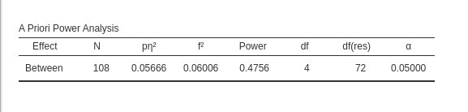
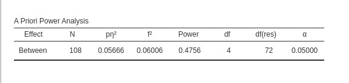
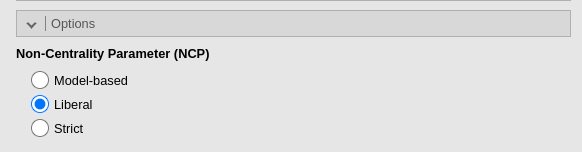
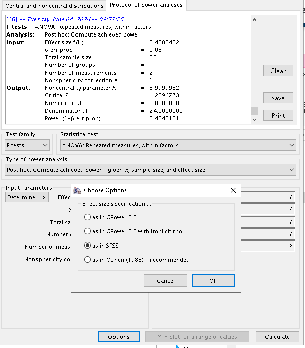
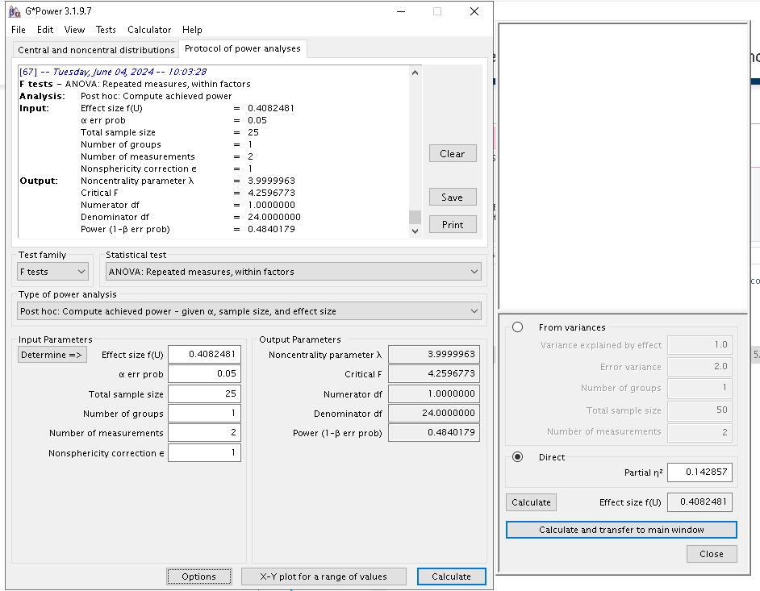
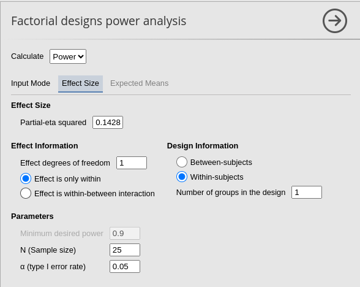
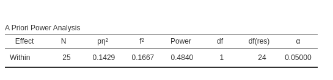
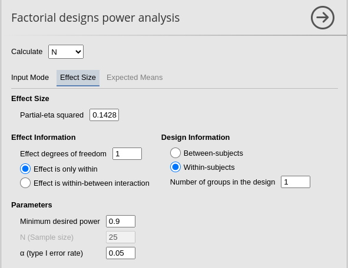
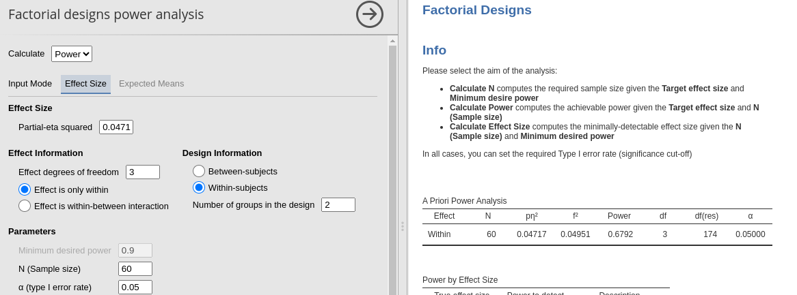

Factorial design: power from means and SD
Power Analysis for the Factorial Designs
PAMLj version ≥ 0.2.0
Here we compare the results of PAMLj with other software that performs power analysis. In particular, we will compare our results with R pwr package, Superpower R package, and G*Power.
Data
Factorial designs power analysis from
Expected Means of PAMLj
requires a dataset with the expected means and the standard deviations
for the desin cells one is planning. Factors of the design should be
listed as categorical factors, and their means and sd should be listed
in subsequent columns. For instance, a simple design with two groups,
can be prepared like this:
When data are defined, one can use the
Factorial designs power analysis from
Expected Means interface in define the design factors,
their means and standard deviations.
As soon as the variables are defined, the effect sizes are computed together with the power parameters.

As a quick test, we can use G*Power to check the
results, using its interface for inputing the means and the standard
deviations.
Results are almost the same, with only one unit of difference.
Unfortunately, G*Power does not allow to input means and sd other than for one-way between-subjects designs, so we cannot test PAMLj for more complex designs. For this purpose, we can use Superpower R package, which allows computing the expected power starting from an array of means and standard deviations.
Between-subjects ANOVA
We can use the dataset factorial which comes with PAMLj in the jamovi
data library.


- Aim = Sample Size
- \(p\eta^2\) = 0.05665751
- \(f\) = 0.24507
- Effect DF = 4
- Number of groups in the design = 36
- Model DF = 35
- Power = .475627
- Alpha = .05
- Correct results: N = 108
G*Power
First notice that for this problem, GPower offers F test: Fixed effects ANOVA routine, which requires an \(f\) as the effect size . \(f\) is simply the square root of \(f^2\) so it can be computed from the partial Eta-squared as \(f=\sqrt{p\eta^2/(1-p\eta^2)}\) .
Plugging in the parameters we obtain:

R
As we have seen in Rosetta: GLM
posthoc power, pwr.f2.test command will underestimate
the power due to the fact that the non centrality parameter is smaller
than the one used in G*Power. Nonetheless, we can get an approximated
estimation of the sample size by computing the N employing the whole
model DF \(m=35\), yielding \(v=N+m+1\)
f<-0.2450722
f2<-f^2
u<-4
m<-35
power=.475627
(res<-pwr::pwr.f2.test(f2=f2,u=4, power=power,sig.level=.05))##
## Multiple regression power calculation
##
## u = 4
## v = 101.0071
## f2 = 0.06006038
## sig.level = 0.05
## power = 0.475627N<-round(res$v+m+1)
N## [1] 137As expected, the required sample size obtained in
pwr.f2.test is larger than the one obtained in GPower.
PAMLj
We plug in the partial Eta-squared and the required parameters, and we obtain N=108, as in GPower.
 

To obtain a practically equivalent result of the one obtained with
pwr.f2.test, we can simply unselect the
G*Power NCP option.


Repeated Measures ANOVA
To test the Factorial design power analysis sub-module
for repeated measures or mixed design, we can compare results with
GPower and
Superpower
R package. However, in G*Power the default effect size used for
repeated-measures effects is defined in a different way as compared with
Factorial design power analysis sub-module, Superpower or
even SPSS. Moreover, Superpower package requires to input
the expected means of the design cells and only produce estimation of
power,not the required N. Nonetheless, we can still make some useful
comparison.
We start with a 2x2 repeated measure design as described in Caldwell et al. Superpower 2x2 within-within example. They tested a 2x2 design with 25 participants, with interaction effect as follows:
- Aim = Power
- AXB \(p\eta^2\) = 0.1428571
- \(f\) = 0.40825
- Effect DF = 1
- Number of groups in the design = 1
- N = 25
- Alpha = .05
- Correct results: AxB power =.484
Superpower
In the Superpower package, we can obtain the results
with the following code:
mu = c(700, 670, 670, 700)
n <- 25
sd <- 150
r <- 0.75
string = "2w*2w"
alpha_level <- 0.05
design_result <- Superpower::ANOVA_design(design = string,
n = n,
mu = mu,
sd = sd,
r = r, plot=FALSE)
exact_result <- Superpower::ANOVA_exact(design_result,
alpha_level = alpha_level,
verbose = FALSE)
zapsmall(exact_result$main_results)## power partial_eta_squared cohen_f non_centrality
## a 5.00000 0.00000 0.00000 0
## b 5.00000 0.00000 0.00000 0
## a:b 48.40183 0.14286 0.40825 4G*Power
As regard G*Power, the correct input requires some
reasoning. First, G*Power uses different definition of the
effect size. Both Superpower and PAMLj use the standard partial-eta squared,
the same effect size one would find in SPSS repeated-measure Anova
analysis. To set G*Power to use this effect size, we
selected the appropriate option in Options.

Furtheremore, G*Power requires in input the number of
repeated measures and the number of groups in the design. Because the
example is a completely repeated measure design, the number of groups is
simply 1. However, even though the interaction has 4 repeated measures,
the actual degrees of freedom are only 1, because for the interaction we
have \(DF=(a-1)(b-1)\), where \(a\) and \(b\) are the number of levels of the
factors. Now, to “trick” G*Power to compute the power for
an effect with 1 DF, we should declare that the repeated measures levels
are 2. After all, a 2-way interaction in a repeated measure design is
simply the differences between two difference values, so the setup is
not so far away from the actual design. That, indeed, produces the
correct output.

PAMLj
The setup in PAMLj is straightforward and produced the expected results.
 
Required N
We can use the same design to test the convergence of G*Power and PAMLj in computing the required N.
- Aim = N
- AXB \(p\eta^2\) = 0.1428571
- \(f\) = 0.40825
- Effect DF = 1
- Number of groups in the design = 1
- Power = .90
- Alpha = .05
- Correct results: AxB N =66
G*Power

PAMLj


Results are identical with required \(N=66\). As an additional test, we can ask
Superpower to compute the power fo \(N=66\), expecting an estimated power very
similar to .90.
mu = c(700, 670, 670, 700)
n <- 66
sd <- 150
r <- 0.75
string = "2w*2w"
alpha_level <- 0.05
design_result <- Superpower::ANOVA_design(design = string,
n = n,
mu = mu,
sd = sd,
r = r, plot=FALSE)
exact_result <- Superpower::ANOVA_exact(design_result,
alpha_level = alpha_level,
verbose = FALSE)
zapsmall(exact_result$main_results)## power partial_eta_squared cohen_f non_centrality
## a 5.00000 0.00000 0.00000 0.00
## b 5.00000 0.00000 0.00000 0.00
## a:b 89.27484 0.13976 0.40307 10.56Interestengly, if we user Superpower simulation-based
power estimation, we get an even closer result to the one obtained in
PAMLj.
mu = c(700, 670, 670, 700)
n <- 66
sd <- 150
r <- 0.75
string = "2w*2w"
alpha_level <- 0.05
design_result <- Superpower::ANOVA_design(design = string,
n = n,
mu = mu,
sd = sd,
r = r,plot=FALSE)
#exact_result <- Superpower::ANOVA_power(design_result,
# alpha_level = alpha_level,
# verbose = FALSE,seed=12^3)
zapsmall(exact_result$main_results)## power partial_eta_squared cohen_f non_centrality
## a 5.00000 0.00000 0.00000 0.00
## b 5.00000 0.00000 0.00000 0.00
## a:b 89.27484 0.13976 0.40307 10.56Mixed ANOVA
Let’s now assume that the design we just analyzed was a mixed between-within design. We can use an example in Caldwell et al. Superpower ComplexMixed Anova example. Here we have 4 (Time) x 2 (Treatment) design, with Time with four repeated measures and Treatment with two groups. Differently from the example in Caldwell et al., we assume 60 participants, so the power estimates do not ceil up to 1. The setup is the following:
- Aim = power
- Treatment \(p\eta^2\) = 0.01550 (df=1)
- Time \(p\eta^2\) = 0.04581
(df=3)
- Treatment X Time \(p\eta^2\) = 0.02347 (df=3)
- Number of groups in the design = 2
- N = 60 (30 per group)
- Alpha = .05
Running the analysis with Superpower we obtain.
cor_1 <- matrix(c(1,.6,.491,.399,
.6,1,.495,.402,
.491,.495,1,.491,
.399,.402,.491,1), nrow=4)
cor_2 <- cor_1*0
pain_cor_mat <- cbind(rbind(cor_1,cor_2),
rbind(cor_2,cor_1))
design_result <- Superpower::ANOVA_design("2b*4w",
n = 30,
mu = c(2.4, 2.38, 2.05, 1.90,
2.4, 2.39, 2.36, 2.30),
sd = .92,
r = pain_cor_mat,
labelnames = c("Treatment", "sensory", "standard",
"TIME", "t1", "t2", "t3", "t4"),
plot = FALSE)
exact_result <- Superpower::ANOVA_exact(design_result,
alpha_level = alpha_level,
verbose = FALSE)
zapsmall(exact_result$main_results)## power partial_eta_squared cohen_f non_centrality
## Treatment 15.90956 0.01598 0.12742 0.94169
## TIME 67.91487 0.04717 0.22249 8.61356
## Treatment:TIME 37.65318 0.02418 0.15742 4.31189exact_result$aov_result## Anova Table (Type 3 tests)
##
## Response: y
## Effect df MSE F pes p.value
## 1 Treatment 1, 58 2.06 0.94 .016 .336
## 2 TIME 3, 174 0.44 2.87 * .047 .038
## 3 Treatment:TIME 3, 174 0.44 1.44 .024 .234
## ---
## Signif. codes: 0 '***' 0.001 '**' 0.01 '*' 0.05 '+' 0.1 ' ' 1which align quite well with the PAMLj results, with some small differences mostly due to approximation.
Main effect of Treatment

Main effect of Time

Interaction

Comments?
Got comments, issues or spotted a bug? Please open an issue on PAMLj at github or send me an email
Back to PAMLj: rosetta
References
’